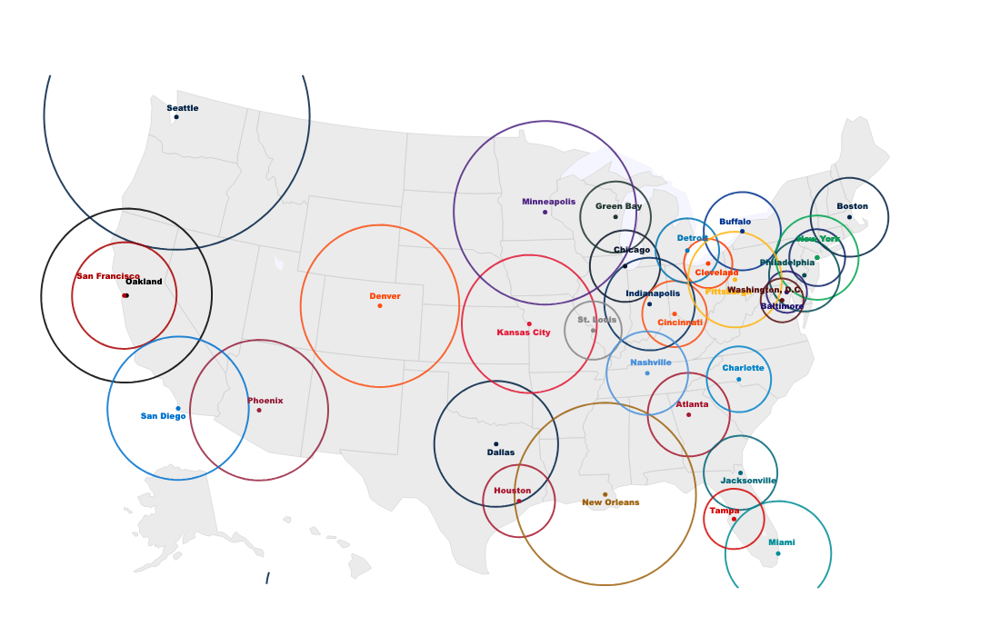
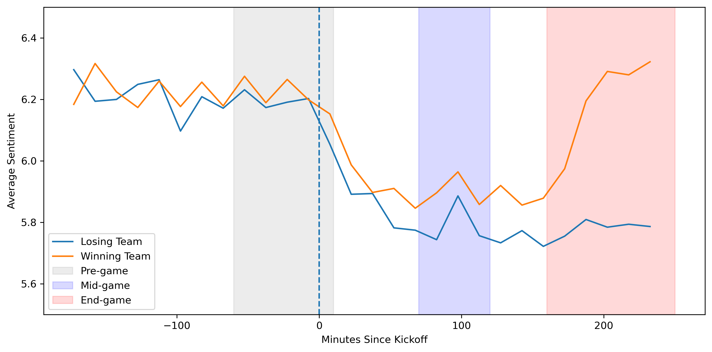

UNDERGRADUATE HONORS THESIS · DATA SCIENCE
NFL Fandom Sentiment &
Geographic Analysis
How geographically concentrated are NFL fan bases, and how does fan sentiment change in response to game outcomes?
4 seasons
2011–2014 NFL regular seasons analyzed, across all 32 teams
121–782 km
Range of estimated fandom radii across the league
ρ = 0.85
Correlation between local and overall fan sentiment
r = 0.33
Correlation between win percentage and tweet sentiment
OVERVIEW
Measuring fandom the way fans actually behave, not the way ticket sales say they should.
Sports teams are usually described as belonging to a single city, but fan bases rarely stay inside city limits. For my honors thesis, I used a large corpus of geotagged, game-related tweets to measure where NFL fan bases actually extend to, and how fan emotion shifts in real time as games are played and won or lost.
The project combines geospatial analysis, natural language sentiment scoring, and statistical modeling to answer two connected questions: how far does a team's fan base geographically reach, and how predictable is the emotional arc fans go through during a game.
APPROACH
Data, methods, and modeling
Working with Twitter's Decahose API (a random 10% sample of public tweets), I collected tweets tagged with team-specific hashtags for every regular season game between 2011 and 2014, spanning a seven-day window around each matchup.
To estimate each team's geographic reach, I built a
fandom radius metric: normalized tweet
activity per capita by metropolitan area, then found
the distance from a team's home city at which that
activity drops to background levels. Distances were
computed with geopandas using a projected
coordinate system for accuracy, and metropolitan
population data came from Core Based Statistical Area
estimates.
For emotion, I used the Hedonometer, a word-level happiness-scoring instrument, to track sentiment for winning and losing teams from three hours before kickoff through four hours after. Team and player names were filtered out beforehand so the scores reflected reactions to the game, not the words in a team's own name.
I also tested whether team success predicts fan sentiment using a regression of average win percentage against average tweet sentiment across the four seasons, and used Reduced Major Axis regression to quantify how fandom intensity scales with metropolitan area size.
FINDING 01
Fan bases vary enormously in geographic reach
Fandom radii ranged from 121 km for the Baltimore Ravens to 782 km for the Seattle Seahawks. Teams with few nearby competitors, like Seattle and Minnesota, pulled in fans from far outside their home metro area, while teams packed into dense regions with several nearby franchises, like Baltimore and Washington, had much more geographically concentrated followings. Fandom intensity scaled with metro area size at a rate slower than proportional (α = 0.53, R² = 0.64), meaning fan interest spreads out geographically rather than staying concentrated in the largest markets.

Fig. 1 — Estimated fandom radius for each NFL team, based on geotagged tweet activity relative to each team's home city. Larger circles indicate fan bases that extend further beyond the home market.
FINDING 02
Winning and losing fans live out two different emotional stories
Before kickoff, fans of both eventual winners and losers tweet with almost identical, high optimism. Once the game starts, sentiment drops for everyone, ticks up slightly at halftime, and then splits: sentiment for the winning team's fans climbs steadily through the second half and finishes above its pre-game level, while sentiment for the losing team's fans stays flat and ends near the lowest points typically observed across all of Twitter.
The shape lines up closely with two of the emotional arcs Kurt Vonnegut argued show up again and again in the stories people tell: winning fans trace a "Man in a Hole" arc (a fall followed by recovery), while losing fans trace a straightforward "Tragedy."
The idea traces back to a 1965 lecture in which Vonnegut sketched these recurring shapes on a chalkboard, arguing that most stories follow one of a handful of emotional paths.1 It stayed a fun, mostly qualitative idea for decades. In 2016, researchers at the University of Vermont's Computational Story Lab — the same lab that advised this thesis — put it to a quantitative test. Using the Hedonometer, the same sentiment instrument I use here, they scored emotional trajectories across more than a thousand works of fiction and found the stories really do cluster into six dominant shapes, "Man in a Hole" among them.2
My results echo that pattern directly, just compressed into the three hours of a single football game instead of an entire novel: winning fans live out "Man in a Hole" in real time, and losing fans live out "Tragedy." It's a fun parallel, but a genuinely useful one too — it shows sentiment tracks real-time game events far more strongly than geography does, which matters for anyone trying to use social sentiment as a live proxy for engagement.

Fig. 4(d) — Average tweet sentiment for eventual winning (orange) and losing (blue) teams, tracked in 15-minute intervals relative to kickoff. Sentiment starts nearly identical, dips together at kickoff, and diverges sharply after halftime.
1 David Comberg, recording of Kurt Vonnegut's lecture "On the Shapes of Stories" (1995/2010) — watch on YouTube. 2 A. J. Reagan, L. Mitchell, D. Kiley, C. M. Danforth, and P. S. Dodds, "The Emotional Arcs of Stories Are Dominated by Six Basic Shapes," EPJ Data Science 5, 31 (2016) — read the paper.
WHY IT MATTERS
Takeaways
- Geography explains where fans are, but not how they feel: sentiment inside a team's fandom radius correlated at ρ = 0.85 with sentiment across all tweets about that team, suggesting emotional tone is remarkably consistent regardless of a fan's location.
- Team performance is only a weak predictor of fan mood. Win percentage and average sentiment correlated at just r = 0.33, meaning winning helps, but culture, rivalries, and fan expectations shape sentiment just as much.
- In-game social sentiment could complement traditional fan engagement metrics like TV ratings and attendance, especially for measuring real-time reaction to specific plays, coaching decisions, or officiating calls.
- Blowout games generated more tweets on average than close games during parts of play, likely driven by highlight worthy moments rather than suspense alone.
LIMITATIONS & NEXT STEPS
Being honest about the constraints
The analysis only covers 2011–2014, the window when geotagged tweets were common before Twitter's mobile app changed in 2015, and relies on a 10% sample of geolocated tweets, a small and possibly non-representative slice of all fans. Word-level sentiment scoring also can't detect sarcasm or football-specific slang. Future work could compare sentiment against betting odds, or break sentiment down by individual scoring plays to see which moments move the needle most.